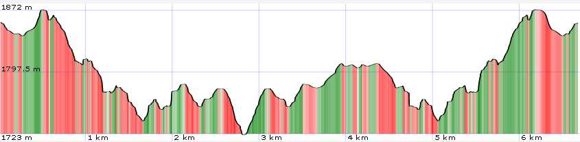
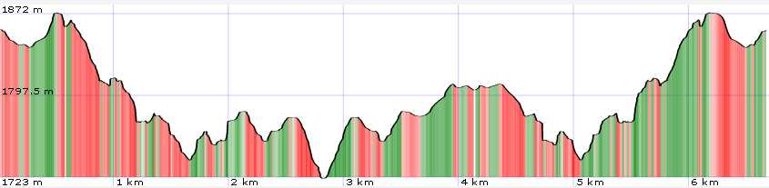

General Information
Map

| data fields | Note |
|---|---|
| number | 003 |
| suitable for |
|
| degree of difficulty |
|
| distance | 7 km |
| hiking time | 2h |
| difference in altitude | 400 mt D+ e 400 mt D- |
| recommended period |
|
| Road surface | path, rocky ground |
| additional notes | Pay particular attention to the rocky section between Passo della Fariola and Passo della Vecchia |

